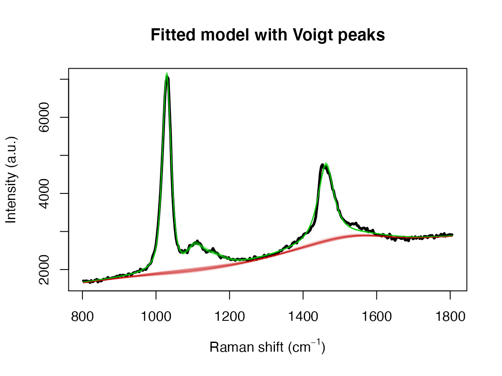
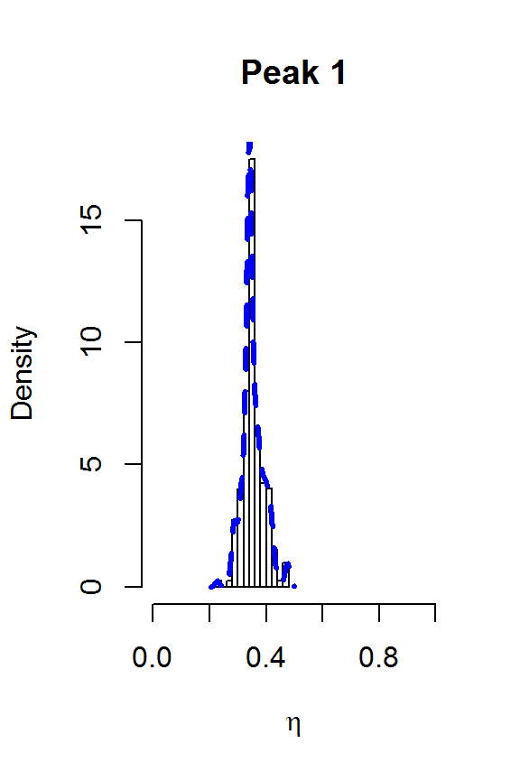
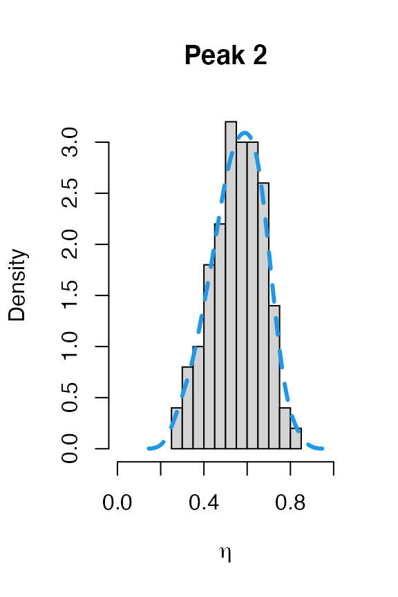
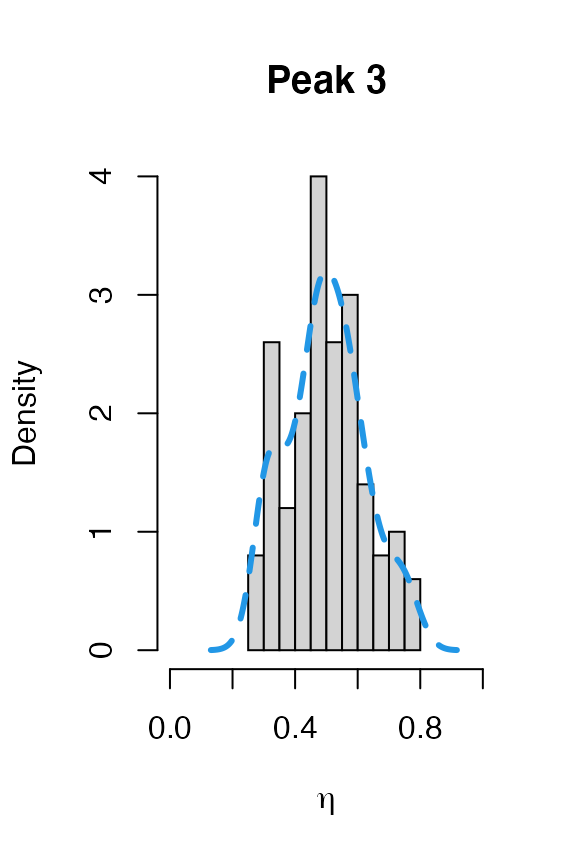
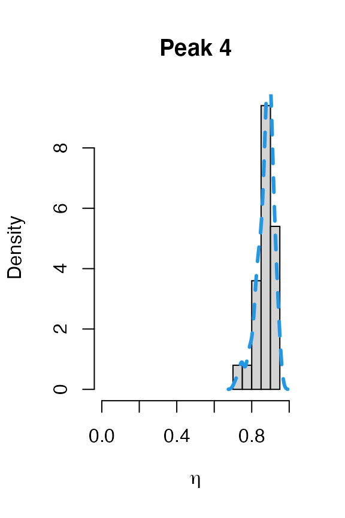

Methanol example
Matt Moores, Benjamin Moskowitz and Karen Faulds
2020-02-06
Source:vignettes/Methanol.Rmd
Methanol.RmdThere are 3 R functions available in the package serrsBayes for model-based, statistical analysis of spectroscopy:
fitSpectraMCMCfitSpectraSMCfitVoigtPeaksSMC
This vignette will provide recommendations for choosing which function to use for a given purpose. As an example, let’s say I wanted to fit a Raman spectrum of methanol. With a quick Google search, I find that there should be 4 peaks located at wavenumbers 1033 (C-O stretching), 1106 (CH3 rocking), 1149 (CH3 bending), and 1448 cm\(^{-1}\). However, we know that these peaks can shift slightly due to differences in temperature, pressure, spectrometer calibration, etc. My sample is in the liquid phase, so these peaks will not be exactly Gaussian or Lorentzian, but somewhere in the middle. On the other hand, I don’t want to wait for hours for SMC to finish running.
The first point to emphasise is that fitSpectraMCMC should not be used for real data. It exists mainly to illustrate the differences between MCMC and SMC algorithms, so is only of interest to computational statisticians.
fitSpectraSMC is the fastest method, but can also be difficult to tune. You need to choose either Lorentzian or Gaussian broadening functions. You also need to use fixed peak locations and the results are sensitive to the choice of priors$bl.smooth, however if you manage to get it working for your data then there is no real reason to use fitVoigtPeaksSMC.
The main differences in fitVoigtPeaksSMC are as follows:
- There are 2 scale parameters, \(\psi_G\) and \(\psi_L\), that control the full-width at half-maximum (FWHM) of the peaks. The broadening profile is a mixture of Gaussian and Lorentzian, also known as a pseudo-Voigt function.
- The peak locations are not fixed. Instead, they are estimated as parameters of the model. This means that you need to supply informative prior distributions for the peak locations,
loc.mu(mean) andloc.sd(standard deviation), in wavenumbers \(\left(\mathrm{cm}^{-1}\right)\). - The underlying SMC algorithm works differently. The main effect of this is that you should set
priors$bl.smooth = 1if you are usingfitVoigtPeaksSMC, instead ofpriors$bl.smooth=10^11or something like that. The baseline estimation is more robust and easier to tune for “difficult” spectra. - You do not need to set a prior for the amplitudes of the peaks (
beta.muandbeta.sd). If you leave it out, then a uniform prior will be used by default. However, you can also set informative priors for the amplitude of each peak in the spectrum if that information is available.
Raw Data
The first step is always to read in the spectrum and plot it. Normally I would use the R package hyperSpec for this, but the data that we are going to use is included in the R package serrsBayes:
library(serrsBayes)
data("methanol", package = "serrsBayes")
wavenumbers <- methanol$wavenumbers
spectra <- methanol$spectra
peakLocations <- c(1033, 1106, 1149, 1448)
nPK <- length(peakLocations)
pkIdx <- numeric(nPK)
for (i in 1:nPK) {
pkIdx[i] <- which.min(wavenumbers < peakLocations[i])
}
nWL <- length(wavenumbers)
plot(wavenumbers, spectra[1,], type='l', col=4,
xlab=expression(paste("Raman shift (cm"^{-1}, ")")), ylab="Intensity (a.u.)", main="Observed Raman spectrum for methanol")
points(peakLocations, spectra[1,pkIdx], cex=2, col=2)
text(peakLocations + c(100,20,40,0), spectra[1,pkIdx] + c(0,700,400,700), labels=peakLocations)
fitSpectraSMC
We can use exactly the same priors as given in the package README:
lPriors <- list(scale.mu=log(11.6) - (0.4^2)/2, scale.sd=0.4, bl.smooth=10^11, bl.knots=50,
beta.mu=5000, beta.sd=5000, noise.sd=200, noise.nu=4)
tm <- system.time(result <- fitSpectraSMC(wavenumbers, spectra, peakLocations, lPriors))## [1] "1.616 minutes"We can see there is a problem with the model fit:
samp.idx <- sample.int(length(result$weights), 200, prob=result$weights)
plot(wavenumbers, spectra[1,], type='l', lwd=3,
xlab=expression(paste("Raman shift (cm"^{-1}, ")")), ylab="Intensity (a.u.)", main="Fitted model with Lorentzian peaks")
for (pt in samp.idx) {
bl.est <- result$basis %*% result$alpha[,1,pt]
lines(wavenumbers, bl.est, col="#C3000009")
lines(wavenumbers, bl.est + result$expFn[pt,], col="#00C30009")
}
Adjusting the priors is not going to fix this. The underlying issue is that the peak location of 1448 cm\(^{-1}\) doesn’t match our observed data. Even a small difference in the location of one of the peaks can adversely effect the entire model fit. This is the kind of issue that the function fitVoigtPeaksSMC is designed to handle.
fitVoigtPeaksSMC
The priors here are very similar to what we used for TAMRA in the other vignette. However, we don’t need as many bl.knots because we have a narrower range of wavenumbers. Instead, we will use bl.knots = 50, the same as what we used for fitSpectraSMC above.
lPriors2 <- list(loc.mu=peakLocations, loc.sd=rep(50,nPK), scaG.mu=log(16.47) - (0.34^2)/2,
scaG.sd=0.34, scaL.mu=log(25.27) - (0.4^2)/2, scaL.sd=0.4, noise.nu=5,
noise.sd=50, bl.smooth=1, bl.knots=50)
data("result2", package = "serrsBayes")
if(!exists("result2")) {
tm2 <- system.time(result2 <- fitVoigtPeaksSMC(wavenumbers, spectra, lPriors2, npart=3000))
result2$time <- tm2
save(result2, file="Figure 2/result2.rda")
}fitVoigtPeaksSMC takes more than twice as long to fit the model, due to estimating the additional parameters. However, we obtain a much better fit to the observed spectrum:
## [1] "7.21733333333347 minutes"samp.idx <- 1:nrow(result2$location)
plot(wavenumbers, spectra[1,], type='l', lwd=3,
xlab=expression(paste("Raman shift (cm"^{-1}, ")")), ylab="Intensity (a.u.)", main="Fitted model with Voigt peaks")
samp.mat <- resid.mat <- matrix(0,nrow=length(samp.idx), ncol=nWL)
samp.sigi <- samp.lambda <- numeric(length=nrow(samp.mat))
for (pt in 1:length(samp.idx)) {
k <- samp.idx[pt]
samp.mat[pt,] <- mixedVoigt(result2$location[k,], result2$scale_G[k,],
result2$scale_L[k,], result2$beta[k,], wavenumbers)
samp.sigi[pt] <- result2$sigma[k]
samp.lambda[pt] <- result2$lambda[k]
Obsi <- spectra[1,] - samp.mat[pt,]
g0_Cal <- length(Obsi) * samp.lambda[pt] * result2$priors$bl.precision
gi_Cal <- crossprod(result2$priors$bl.basis) + g0_Cal
mi_Cal <- as.vector(solve(gi_Cal, crossprod(result2$priors$bl.basis, Obsi)))
bl.est <- result2$priors$bl.basis %*% mi_Cal # smoothed residuals = estimated basline
lines(wavenumbers, bl.est, col="#C3000009")
lines(wavenumbers, bl.est + samp.mat[pt,], col="#00C30009")
resid.mat[pt,] <- Obsi - bl.est[,1]
}
The model fit could be further improved. For example, it appears that there is a shoulder peak around 1550 cm\(^{-1}\). However, we can see that the posterior distribution for the fourth peak location is very far away from the theoretical value of 1448:
for (j in 1:nPK) {
hist(result2$location[,j], main=paste("Peak",j),
xlab=expression(paste("Peak location (cm"^{-1}, ")")),
freq=FALSE, xlim=range(result2$location[,j], peakLocations[j]))
lines(density(result2$location[,j]), col=4, lty=2, lwd=3)
abline(v=peakLocations[j], col=2, lty=3, lwd=3)
}Posteriors for the peak locations.
This explains why the results from fitSpectraSMC were so poor. You really need to have very precise information about all of the peak locations in order for that function to perform well. Otherwise, fitVoigtPeaksSMC will usually give much better fit to the observed spectrum.
fitSpectraSMC, redux
We can use the posterior from fitVoigtPeaksSMC to obtain priors for running fitSpectraSMC. This can be useful, for example, for fitting the model to multiple datasets that were obtained under the same experimental conditions.
The first question is whether to use Lorentzian or Gaussian broadening functions. We can transform the posteriors for \(\psi_G\) and \(\psi_L\) to obtain a number \(\eta\) between 0 and 1 for each peak, where 0 implies pure Gaussian and 1 implies Lorentzian. The Wikipedia page provides the equations (Thompson, Cox, and Hastings 1987): \[
f_G = 2\psi_G\sqrt{2\log\{2\}} \\
f_L = 2\psi_L \\
f_V \approx 0.5346 f_L + \sqrt{0.2166f_L^2 + f_G^2} \\
f_{total} \approx \left(f_G^5 + 2.69269f_G^4 f_L + 2.42843f_G^3 f_L^2 + 4.47163f_G^2 f_L^3 + 0.07842f_G f_L^4 + f_L^5 \right)^{1/5} \\
\eta \approx 1.33603 \frac{f_L}{f_{total}} - 0.47719 \left(\frac{f_L}{f_{total}} \right)^2 + 0.11116 \left(\frac{f_L}{f_{total}} \right)^3
\] The above equations are implemented by the function getVoigtParam:
nPart <- nrow(result2$beta)
result2$voigt <- result2$FWHM <- matrix(nrow=nPart, ncol=nPK)
for (k in 1:nPart) {
result2$voigt[k,] <- getVoigtParam(result2$scale_G[k,], result2$scale_L[k,])
f_G <- 2*result2$scale_G[k,]*sqrt(2*log(2))
f_L <- 2*result2$scale_L[k,]
result2$FWHM[k,] <- 0.5346*f_L + sqrt(0.2166*f_L^2 + f_G^2)
}
for (j in 1:nPK) {
hist(result2$voigt[,j], main=paste("Peak",j),
xlab=expression(eta), freq=FALSE, xlim=c(0,1))
lines(density(result2$voigt[,j]), col=4, lty=2, lwd=3)
}
The two largest peaks definitely look Lorentzian, while there is more uncertainty about the line shape for the smaller peaks. This gives us confidence that fitSpectraSMC should be able to give us a good fit to the data, as long as we get the peak locations closer to the correct values. We can also use moment matching to set informative priors for the amplitudes:
lPriors3 <- list(scale.mu=log(11.6) - (0.4^2)/2, scale.sd=0.4, bl.smooth=10^11, bl.knots=50, noise.sd=200, noise.nu=4)
lPriors3$beta.mu <- mean(result2$beta)
lPriors3$beta.sd <- sd(result2$beta)
pkLocNew <- c(colMeans(result2$location), 1550)
tm3 <- system.time(result3 <- fitSpectraSMC(wavenumbers, spectra, pkLocNew, lPriors3, npart=2000))## [1] "0.300166666666667 minutes"samp.idx <- sample.int(length(result3$weights), 200, prob=result3$weights)
plot(wavenumbers, spectra[1,], type='l', lwd=3,
xlab=expression(paste("Raman shift (cm"^{-1}, ")")), ylab="Intensity (a.u.)", main="Fitted model with informative priors")
for (pt in samp.idx) {
bl.est <- result3$basis %*% result3$alpha[,1,pt]
lines(wavenumbers, bl.est, col="#C3000009")
lines(wavenumbers, bl.est + result3$expFn[pt,], col="#00C30009")
}
rug(pkLocNew, col=4, lwd=2)
References
Thompson, P., D. E. Cox, and J. B. Hastings. 1987. “Rietveld Refinement of Debye-Scherrer Synchrotron X-Ray Data from \(Al_2O_3\).” J. Appl. Crystallogr. 20 (2): 79–83. https://doi.org/10.1107/S0021889887087090.